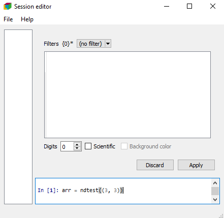
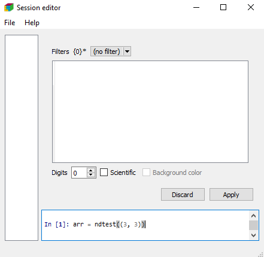

Getting Started¶
To use the LArray library, the first thing to do is to import it
Create an array¶
Working with the LArray library mainly consists of manipulating LArray data structures. They represent N-dimensional labelled arrays and are composed of data (numpy ndarray), axes and optionally a title. An axis contains a list of labels and may have a name (if not given, the axis is anonymous).
You can create an array from scratch by supplying data, axes and optionally a title:
Note
LArray offers two syntaxes to build axes and make selections and aggregations. The first one is more Pythonic (uses Python structures) and allows to use any character in labels. The second one consists of using strings that are parsed. It is shorter to type. For example, you could create the age_category axis above as follows:
age_category = Axis("age_category=0-9,10-17,18-66,67+")
The drawback of the string syntax is that some characters such as , ; = : .. [ ] >> have a special meaning and cannot be used in labels. Strings containing only integers are interpreted as such.
In this getting started section we will use the first, more verbose, syntax which works in all cases and provide the equivalent using the shorter syntax in comments. More examples can be found in the tutorial and the API reference section.
Here are the key properties for an array:
Arrays can be generated through dedicated functions:
zeros(): fills an array with 0ones(): fills an array with 1full(): fills an array with a giveneye(): identity matrixndrange(): fills an array with increasing numbers (mostly for testing)ndtest(): same as ndrange but with axes generated automatically (for testing)sequence(): creates an array by sequentially applying modifications to the array along axis.
Save/Load an array¶
The LArray library offers many I/O functions to read and write arrays in various formats
(CSV, Excel, HDF5, pickle). For example, to save an array in a CSV file, call the method
to_csv():
Content of ‘arr_3D.csv’ file is
a,b\c,c0,c1
a0,b0,0,1
a0,b1,2,3
a1,b0,4,5
a1,b1,6,7
Note
In CSV or Excel files, the last dimension is horizontal and the names of the two last dimensions are separated by a .
To load a saved array, call the function read_csv():
Other input/output functions are described in the corresponding section of the API documentation.
Indexing¶
To select an element or a subset of an array, use brackets [ ]. Let’s start by selecting a single element:
Let’s continue with subsets:
Warning
Selecting by labels as above only works as long as there is no ambiguity.
When several axes have common labels and you do not specify explicitly
on which axis to work, it fails with an error
(ValueError: … is ambiguous (valid in a, b)).
Specifying the axis can be done using the special notation x.axis_name.
The axis name must not contain whitespaces and special characters.
You can also define slices (defined by ‘start:stop’ or ‘start:stop:step’). A slice will select all labels between start and stop (stop included). All arguments of a slice are optional. When not given, start is the first label of an axis, stop the last one.
Aggregation¶
The LArray library includes many aggregations methods. For example, to calculate the sum along an axis, write:
To aggregate along all axes except one, you simply have to append _by to the aggregation method you want to use:
See here to get the list of all available aggregation methods.
Groups¶
A Group represents a subset of labels or positions of an axis:
They can be used in selections:
or aggregations:
In the case of aggregations, it is often useful to attach them a name
using the >> operator:
Group arrays in Session¶
Arrays may be grouped in Session objects. A session is an ordered dict-like container of LArray objects with special I/O methods. To create a session, you need to pass a list of pairs (array_name, array):
Warning
You can also pass a dictionary to the Session’s constructor but since elements of a dict object are not ordered by default, you may lose the order. If you are using python 3.6 or later, using keyword arguments is a nice alternative which keeps ordering. For example, the session above can be defined using: ses = Session(arr0=arr0, arr1=arr1, arr2=arr2).
One of the main interests of using sessions is to save and load many arrays at once:
Graphical User Interface¶
The LArray project provides an optional package called larray-editor allowing users to explore and edit arrays using a graphical interface. This package is automatically installed with larrayenv.
To explore the content of arrays in read-only mode, import larray-editor and call view()
To open the user interface in edit mode, call edit() instead.

Once open, you can save and load any session using the File menu.
Finally, you can also visually compare two arrays or sessions using the compare() function.
In case of two arrays, they must have compatible axes.
For Windows Users¶
Installing the larray-editor package on Windows will create a LArray menu in the
Windows Start Menu. This menu contains:
- a shortcut to open the documentation of the last stable version of the library
- a shortcut to open the graphical interface in edit mode.
- a shortcut to update larrayenv.
 

Once the graphical interface is open, all LArray objects and functions are directly accessible. No need to start by from larray import *.
Compatibility with pandas¶
To convert a LArray object into a pandas DataFrame, the method to_frame() can be used:
Inversely, to convert a DataFrame into a LArray object, use the function aslarray():